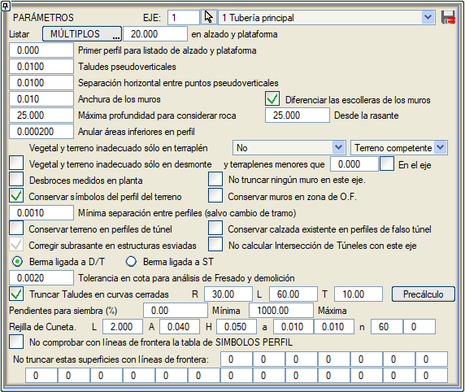

Bu seçenek altında, sistemin farklı yerlerde kullandığı bir dizi parametre toplanmıştır. Bu parametrelerin neredeyse tamamı .vol dosyasında saklanır.

- Boykesit ve platform listeleri için eşit aralık/katlar: Boykesitteki eksen noktaları (rasa.res) ve platformun karakteristik noktaları (plat.res) listelerinde, sistem burada girilen eksen üzerindeki eşit aralıklara veya katlara göre bilgi verir. Varsayılan olarak değer 20 metredir. Bu değer, LİSTELER menüsünde rasa.res listesinin oluşturulması istendiğinde de değiştirilir. Eğer KATLAR olarak etkinleştirilmişse ve başlangıç KM'si örneğin 15.3 ise, 15.3, 20.0, 40.0,... dizisi elde edilir. Buna karşılık, EŞİT ARALIKLAR olarak etkinleştirilmişse 15.3, 35.3, 55.3,... dizisi elde edilir.
- Boykesit ve platform listesi için ilk enkesit:
Yukarıda bahsedilen listelerde, bu başlangıç KM'sidir. Bu değer, LİSTELER menüsünde rasa.res listesinin oluşturulması istendiğinde de değiştirilir.
- Düşeye yakın şevler:
Yarma kontrolü terasman kenarında yapıldığında ve belirtilen şev için bir değer verilmediğinde, üstyapının kapanma şevi. Varsayılan olarak 0.01 metredir.
- Düşeye yakın noktalar arası yatay mesafe:
Bu mesafe, üst üste gelebilecek bazı çizgileri planda hafifçe ayırmaya olanak tanır, böylece bu çizgilerin seçimini ve bu çizgileri içeren enkesitlerin çıkarılmasını kolaylaştırır (varsayılan 0.01 metre).
- Duvarların genişliği: Duvar eteği ve duvar başı çizgileri arasındaki yatay izdüşümde ölçülen mesafedir (varsayılan 0.1 metre).
- Anroşmanları duvarlardan ayır:
Duvar ve duvar pabuçlarının metrajını, sırasıyla anroşman ve anroşman tabanlarının metrajından ayırmaya olanak tanır.
- Bu eksendeki hiçbir duvarı kırpma: Sınır çizgileri, bu eksen için projede tanımlanan duvarları kırpmayacaktır.
- Arazi enkesit dosyasındaki sembolleri koru: Bu seçenek etkinleştirildiğinde, arazi enkesit dosyası herhangi bir sembol içeriyorsa, bunlar ilgili ISPOL#.per (# eksen numarasıdır) dosyasına aktarılır. Hesaplamada enterpole edilen enkesitler, önceki ve sonraki enkesitlerde aynı tipte ve aynı sırada bir sembol varsa, konumları, açıları ve boyutları enterpole edilerek sembolleri de içerir.
- Menfez bölgesindeki duvarları koru: Bu seçenek etkinleştirildiğinde, menfezlerin olduğu bölgelerdeki duvarlar silinmez. Menfezle çakışan KM'lerde, duvarı olmayan veya menfez gövdesinin geçişine izin veren bir boşluklu duvarı olan bir tip kesit ile kesim tanımlanmalıdır.
- Enkesitler arası minimum mesafe (kesim değişikliği hariç): Enkesitler arası minimum mesafe. Varsayılan olarak 0.005 m'dir. Bu değer, tekrar eden enkesitlerin hesaplanabildiği hesap kesimi değişikliklerini etkilemez. Değer 0.0 veya negatif olamaz. Boykesit hesaplanırken, KM'si bir öncekinden bu parametreden daha az bir mesafede olan bir enkesit bulunursa, bu enkesit atlanır (bir hesap bölgesi değişikliği olmadığı sürece).
- Tünel enkesitlerinde araziyi koru:
Tünel kesitine karşılık gelen enkesitlerde arazi silinmez. Kalan arazi, tanımlanan kamulaştırma sınırı kadar bir yarı genişliğe karşılık gelir (diğer enkesitlerde olduğu gibi). Ayrıca ilk kaya horizonunun profilini de temsil eder.
Kaya horizonu her zaman olduğu gibi SAM yüzeylerinden veya hesap bölgelerindeki sondaj verilerinden elde edilir.
Tünel enkesitlerinde araziyi koru seçeneği etkinleştirildiğinde, arazi profilinde bulunan diğer yüzeyler de ISPOL.per'e eklenir.
- Kaya olarak kabul edilecek maksimum derinlik ve Kırmızı kottan için yeterli değerler giriyoruz. ISPOL4.dar tablosunda aşağıdaki iki metraj kalemi ikiye ayrılmıştır:
- TÜNEL KAZISI: [TÜN KAZI K] ve [TÜN KAZI T] olarak ikiye ayrılır
- TOP TÜN KAZI: [TOP TÜN KAZI K] ve [TOP TÜN KAZI T] olarak ikiye ayrılır
 Verev yapılarda terasmanı düzelt:
Bu seçenek etkinleştirildiğinde, program, bir kısmı dolgu diğer kısmı yapı olan karma enkesitlere karşılık gelen yapıların verev bölgelerinde, yapı olan ve olmayan arasında ayrım yaparak enine yönde uygun üstyapı kalınlığını uygular. Verev yapılarda terasmanı düzelt:
Bu seçenek etkinleştirildiğinde, program, bir kısmı dolgu diğer kısmı yapı olan karma enkesitlere karşılık gelen yapıların verev bölgelerinde, yapı olan ve olmayan arasında ayrım yaparak enine yönde uygun üstyapı kalınlığını uygular.
- Y/D'ye bağlı palye - TK'ya bağlı palye:
Bu seçenekle, yarma/dolgu palyesinin ayrı yarma/dolgu kesimlemesine mi bağlı olacağını yoksa bu palyelerin genel tip kesite mi bağlı olacağını seçebiliriz.
- Dar kurplarda şevleri kırp:
enkesitlerin kesişmemesi için şevlerin değiştirilmesini ve kırpılmasını sağlar. Her eksen için etkinleştirildiğinde üç parametre tanımlanır:
- Maksimum yarıçap. Bu yarıçapa eşit veya daha küçük olan kurplar analiz edilir.
- Şev eteklerinin/başlarının kesişimini aramak için kurp başlangıcından önce ve sonundan sonraki maksimum KM cinsinden uzunluk.
- Bazı durumlarda nominal şeve geri dönmek için gereken KM cinsinden geçiş uzunluğu.
Eksen, boykesit ve projeden hesaplandığında, değiştirilmesi gereken şevleri belirleyen otomatik bir ön hesaplama yapılır. Herhangi bir hesaplama yapılmamışsa veya bir parametre değiştirilmişse, Gerçek Kesit yankısındaki etkisini görmek için bu iletişim kutusundan [ön hesaplama] seçeneğine basmalıyız.
- Hendek Izgarası: Hendek ızgarasının geometrisini tanımlamayı sağlar:
- Her modülün uzunluğu (L).
- Modülü çevreleyen kenar profillerinin genişliği (A).
- Profillerin yüksekliği veya kalınlığı (H).
- İç enine ve boyuna profillerin genişliği(a).
- Her modül için iç enine ve boyuna profil sayısı (n).
- Enkesite Semboller tablosunu sınır çizgileriyle kontrol etme: Enkesite Semboller'de tanımlanan sembollerin sınır çizgileri tarafından silinmemesini sağlar.
Bu seçenek burada etkinleştirilirse, seçeneğin etkin olduğu eksen üzerinde çalışır.
Ancak Yapılandırma->Tercihler->Doğrusal Yapı->Boykesit (Boykesit-> Seçenekler) bölümünde etkinleştirilirse, her eksende neyin işaretlendiğine bakılmaksızın projenin tüm eksenleri için çalışır.
- Bu yüzeyleri sınır çizgileriyle kırpma:
sınır çizgilerinden etkilenmeyecek 20 adede kadar yüzey belirtmeye olanak tanır. Eğer üstyapıya aitlerse (ISFIRn.per), üstyapı paketi yeniden hesaplandığında kırpılmazlar.
|